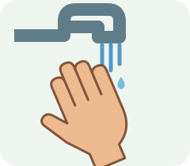

Laboratoř · Prototyp v0.1
Zvládnu to sám
Mytí rukou
Pracovní ukázka pro pedagogy. Použití se žáky až po odborném posouzení a dohodě se školou.
Krok 1 z 5

Namoč si ruce.
Použij čistou tekoucí vodu. Potom vodu zavři.
20 sekund tření rukou
Hotovo!
Prošel jsi všech pět kroků.
Dokončení obrázkového návodu neověřuje skutečné umytí rukou.
Informace pro pedagogy
Režim Učím se ukazuje i doplňující instrukce. Režim Samostatně zobrazuje obrázek a krátké zadání, s volitelnou nápovědou. Žák může libovolně pokračovat nebo se vracet; časovač není povinný. Tření všech ploch rukou alespoň 20 sekund vychází z doporučení CDC pro mytí rukou. Vlastní zjednodušené ilustrace; žádné měření skutečného výkonu ani ukládání výsledků. Pedagogické posouzení a test na iPadu dosud neproběhly.